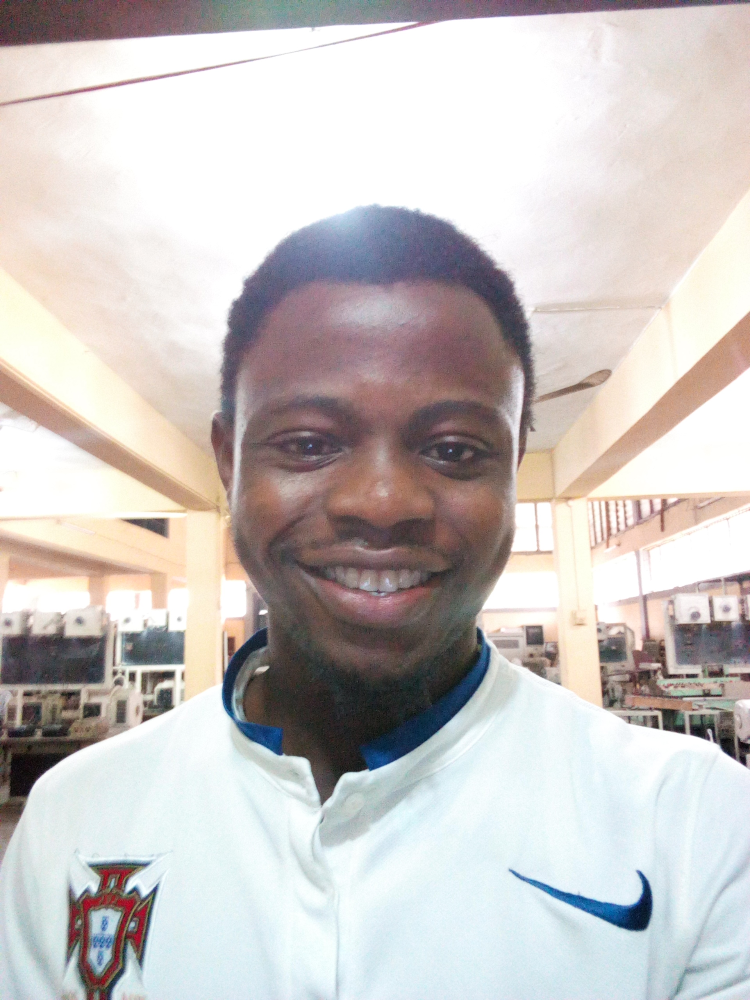

|  |
Olatunji Gabriel Omogbolahan Electrical Electronics Engineering Department University of Lagos |
I am hardworking and result-oriented team player. I am currently 400-level student of the department of Electrical Electronics Engineering. I am trying to break boundaries and create my own story by seeking a dynamic environment with the euphoria of delivering my best and upgrade my skills in engineering and meet the demands of the organization. My engineering studies in the University of Lagos has provided me with a set of skills, social and technical alike varying from critical thinking to problem solving and team work. I’m a Data Science Enthusiast.